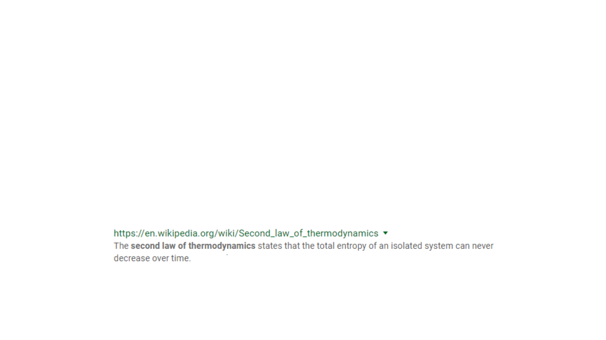
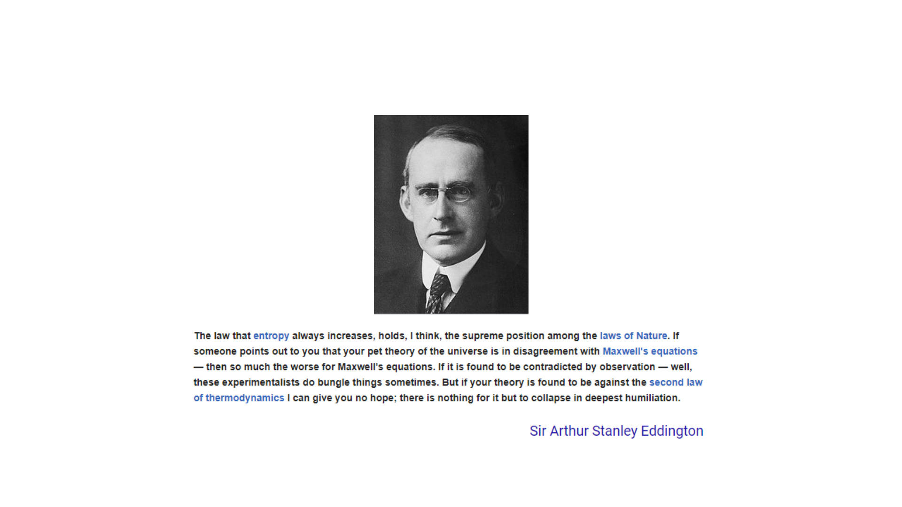
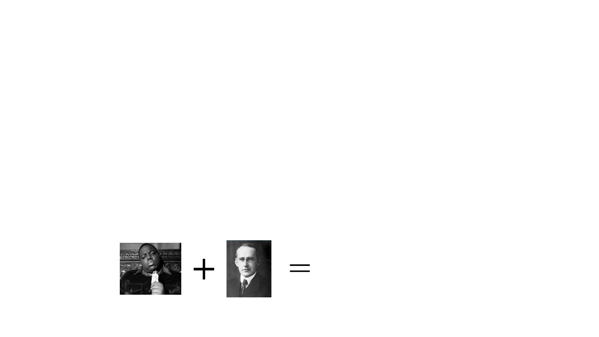
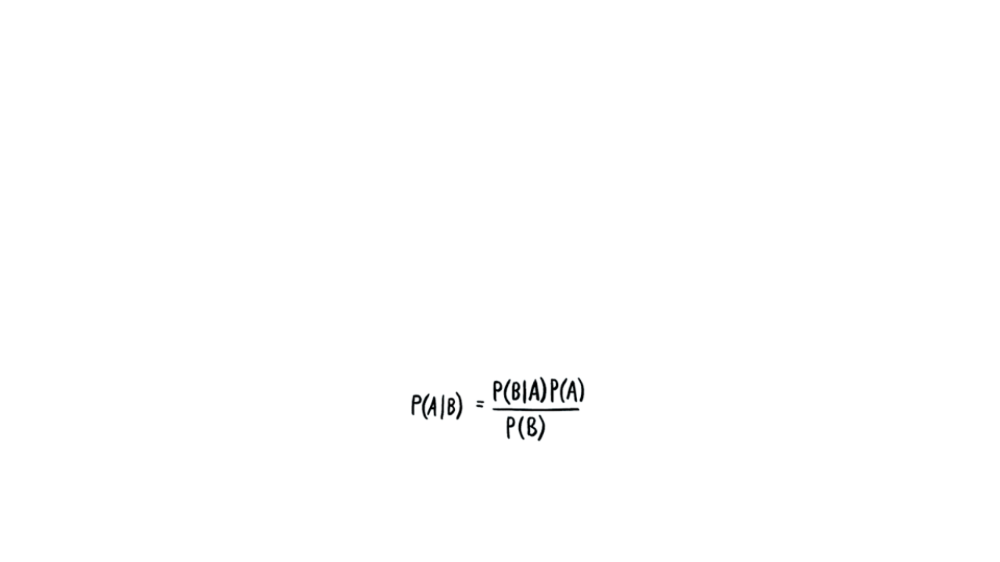
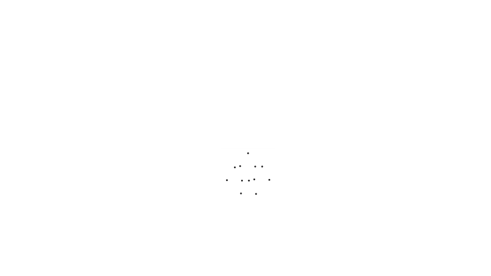

© 2019 Joseph Kidd All Rights Reserved.
Event Control
New Methods for Cyber Security
The Problem
View as a slideshow for animation support.
.

© 2019 Joseph Kidd All Rights Reserved.
Event Control
Knowledge to Action
• Methods to increase awareness of system events for better system control
• Cyber Security Application

© 2019 Joseph Kidd All Rights Reserved.
The Problem
• The increased complexity and scale of modern networked systems leads to
the loss of control, despite the most heroic management efforts.
• There are the typical problems with staffing, budget, executive buy-in,
integration and implementation issues, etc…
• But there is a more fundamental problem at work that makes these
problems more intractable.
• If you think of networks as physical systems, behaving like other physical
phenomena, we can learn something from well-established physical laws.
One of the most dependable and inviolable these is the 2
nd
Law of
Thermodynamics:
3

© 2019 Joseph Kidd All Rights Reserved.
And What This Guy Says!
4

© 2019 Joseph Kidd All Rights Reserved.
What Does This Have To Do with Cyber Security?
5
• An “isolated system” is a system that has no inputs i.e. is not managed.
• “Entropy” is the degree of disorder in the system aka “my network is FUBAR… I mean, is displaying
high levels of entropy”
• In order to decrease entropy, increasing levels of management must be applied to a system.
• However the “management” is also a system that must have continuous inputs to avoid increased
entropy… and so on ad infinitum.
• Management “systems” also increase the overall tendency towards entropy… those have to be
managed too.
• As Eddington and The Notorious B.I.G said, there’s just no way around it: “Mo’ money, Mo’ problems”
ToC
ToC
Seems pretty legit
Seems pretty legit

© 2019 Joseph Kidd All Rights Reserved.
But Wait! Problem #2
• We are heading full speed into the unfamiliar world of Big Data.
• We are not yet equipped to make sense of it intuitively.
• We tend towards a logical fallacy called The Base Rate Fallacy. Our minds tend to ignore generalities
when confronted with specifics. We project the specifics we know onto the unknown, which can be
very misleading
• Big Data is… big. Vast. Unknown. We look at small pieces and can’t help but extrapolate them into
some kind of big picture for ourselves.
• Bayes Theorem of Conditional Probability demonstrates this mathematically (more on this later).
6
© 2019 Joseph Kidd All Rights Reserved.
So…
• A complex system tends toward disorder
• The addition of mitigating controls into a system tends to increase the
overall complexity of the system and therefor often just compounds the
problem
• We don’t have a good intuitive sense of the character of the data we are
now trying to understand.
7

© 2019 Joseph Kidd All Rights Reserved.
Thank You
8